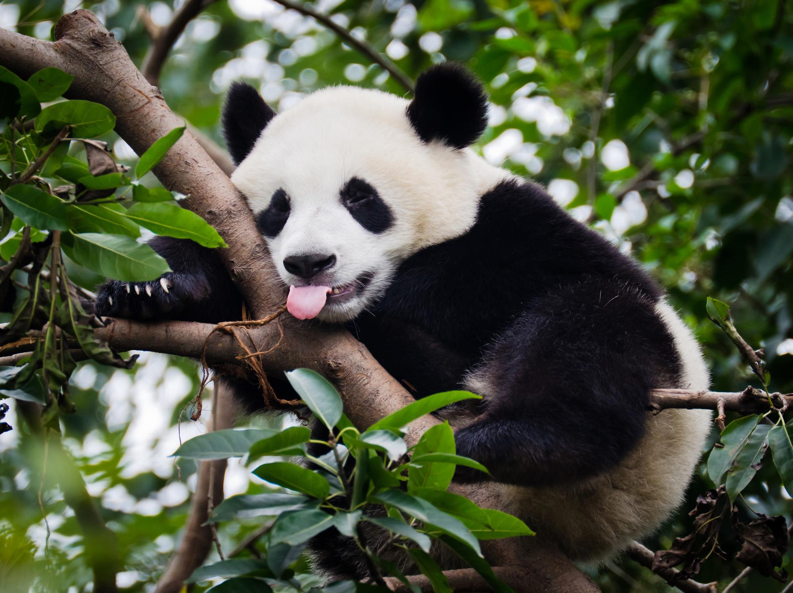
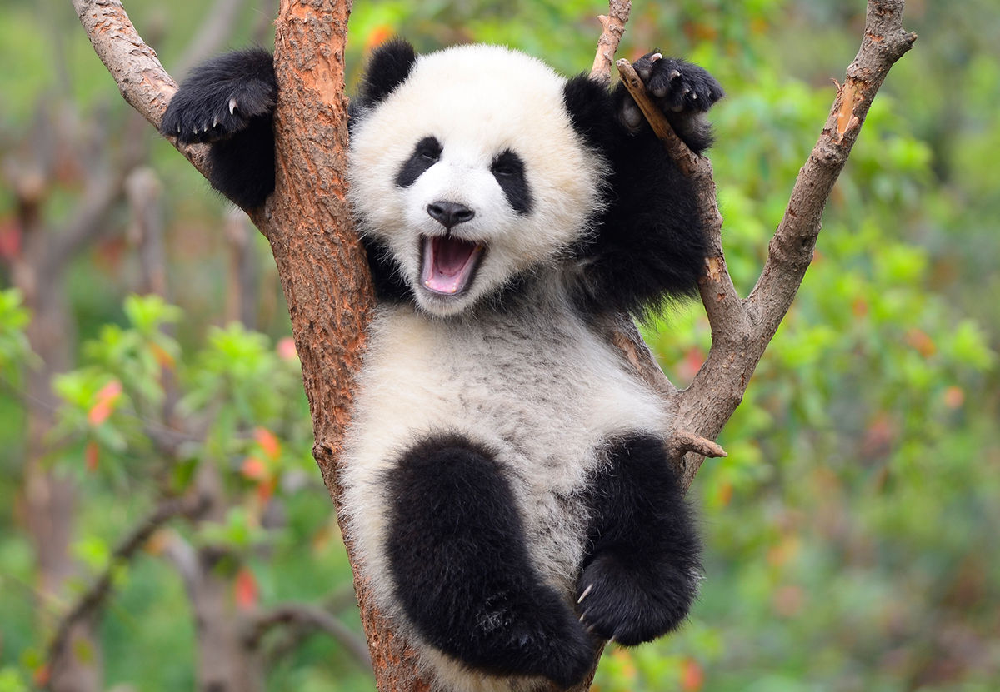
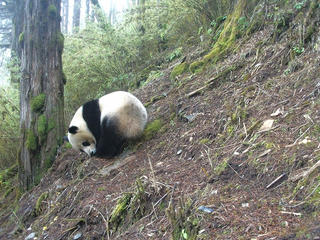
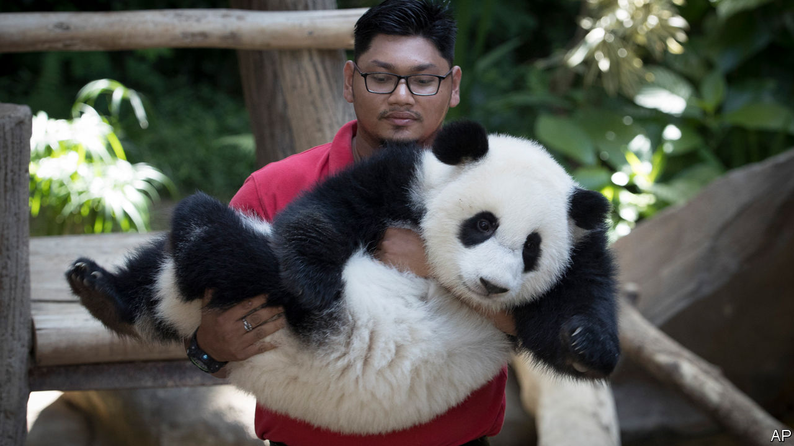

PANDA

WHY THEY METTER
Crucial Role in Forests
|
Pandas play a crucial role in the bamboo forests where they roam by spreading seeds and facilitating growth of vegetation. In the Yangtze Basin where pandas live, the forests are home to a stunning array of wildlife such as dwarf blue sheep, multicolored pheasants and other endangered species, including the golden monkey, takin and crested ibis. The panda’s habitat is at the geographic and economic heart of China, home to millions of people. By making this area more sustainable, we are also helping to increase the quality of life of local populations. Pandas bring huge economic benefits to local communities through ecotourism |
Wild panda get a boostWild panda numbers are finally rebounding after years of decline. In September, the International Union for Conservation of Nature announced that pandas have been upgraded from “endangered” to “vulnerable.” |
 |
Giant Panda no Longer EndangeredThe giant panda has just been downgraded from ‘Endangered’ to ‘Vulnerable’ on the global list of species at risk of extinction, demonstrating how an integrated approach to conservation can help save our planet’s vanishing biodiversity |
 |
|  |
How Camera Traps Help Panda ConservationCamera traps in China have captured images and video footage of giant pandas that are often difficult to see in the wild. The photographs and video are some of the most amazing images ever of pandas and other species in their remote habitat, which were caught on film as part of long-term wildlife monitoring projects set up in panda nature reserves by the Chinese government and WWF |
Panda population grows nearly 17 percentIt’s good news for the furry black and white bear that has come to symbolize wildlife conservation. China announced the results of its Fourth National Giant Panda Survey, which WWF supported with financial and technical expertise. |
 |